Un launcher.Todo tu Minecraft.
KIRMC junta tus instancias, tus mods y un cliente propio con módulos, cosméticos 3D, emotes, amigos y chat. Rápido, bonito y con alma de oni.
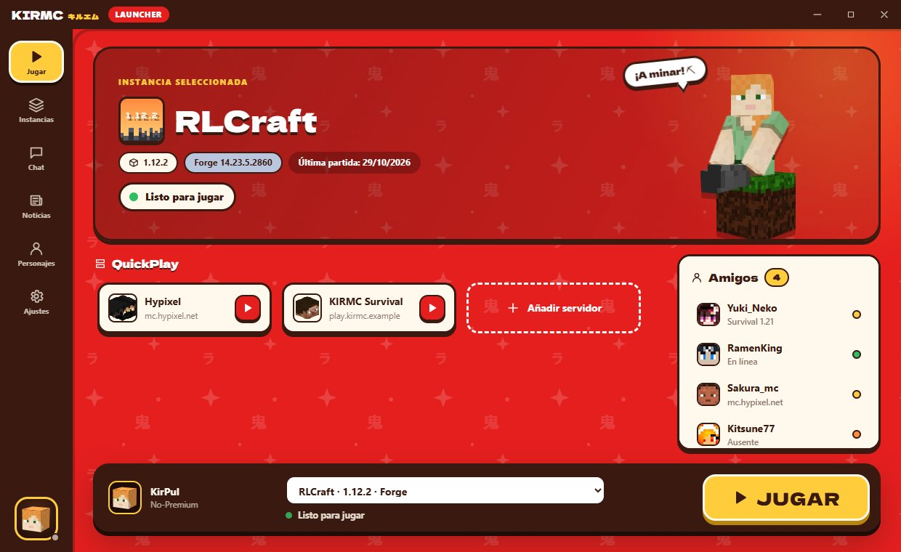
Todo lo que trae KIRMC
Módulos de HUD a tu manera
Pulsa Shift derecho dentro del juego, arrastra cada módulo donde quieras y cámbiale el tamaño. Cuatro estilos y seis colores; todo se guarda solo.
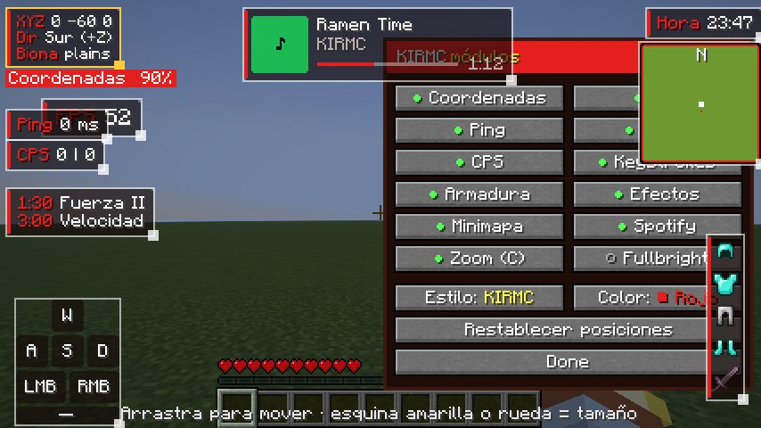
Cosméticos 3D que ven los demás
Sombreros, pelo, ropa con mangas, alas, auras, mascotas, herramientas a la espalda y un Mini Yo con tu skin. Los jugadores con KIRMC los ven dentro del juego.
Probar en la tienda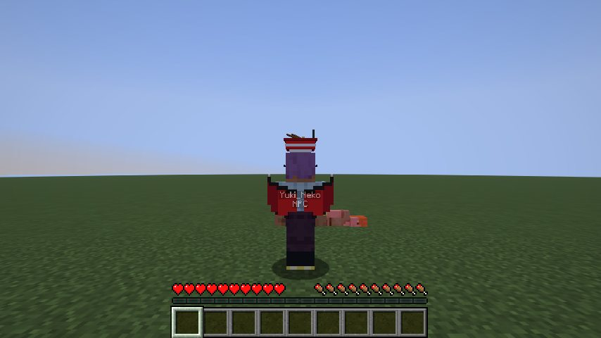
Emotes y bailes
Mantén la tecla B para abrir la rueda de emotes: saluda, siéntate o baila. Hay 22, con páginas que se cambian con la rueda del ratón.
Ver los emotes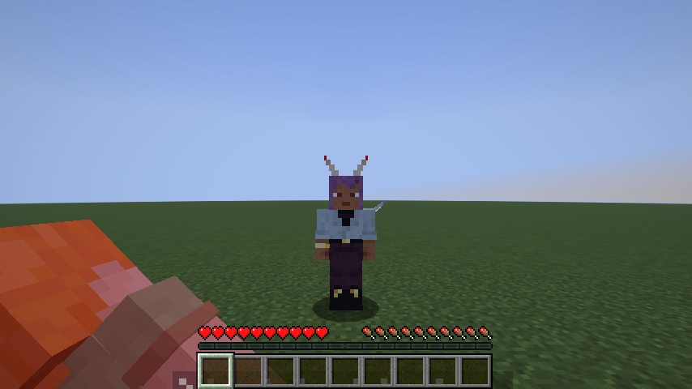
Instancias en un clic
Vanilla, Forge, Fabric y Quilt, cada una con sus mods, mundos y ajustes. Java se instala solo y los modpacks muestran su propia portada.
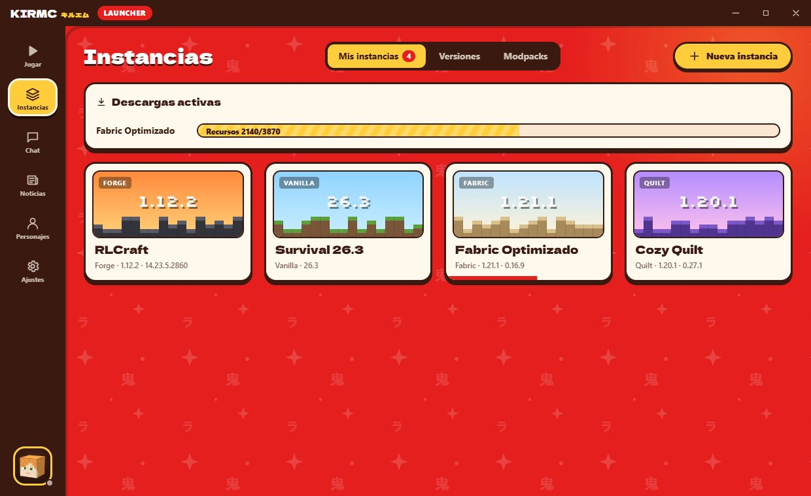
Modrinth integrado
Busca e instala mods, shaders, resource packs y modpacks completos sin salir del launcher.
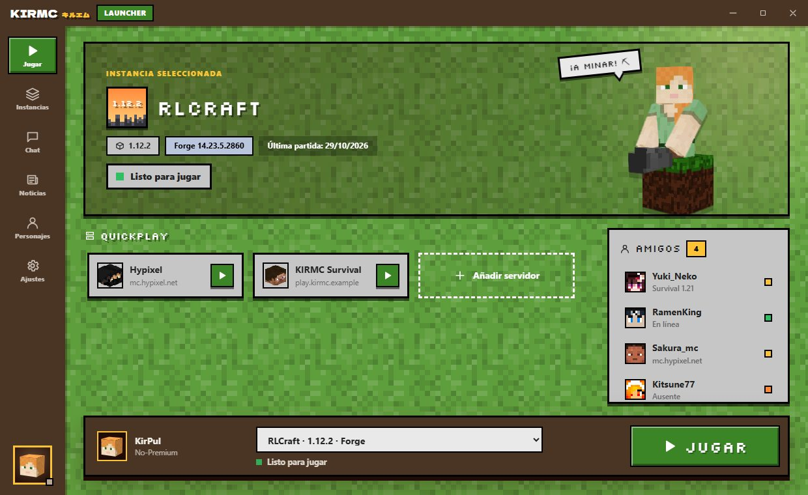
Amigos y chat
Agrega amigos, mira quién está jugando y chatea en tiempo real con notificaciones. El icono del oni marca a quien usa KIRMC.
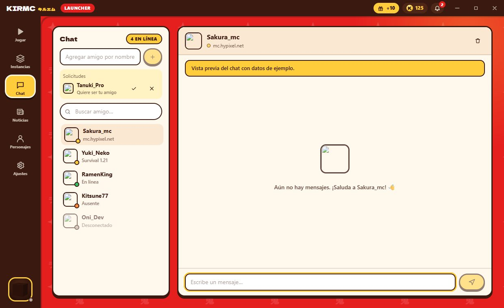
Skins y capas que sí se ven
Cuenta de Microsoft o modo no-premium, con skins y capas visibles. Las capas KIRMC también funcionan como élitros.
Ver las capas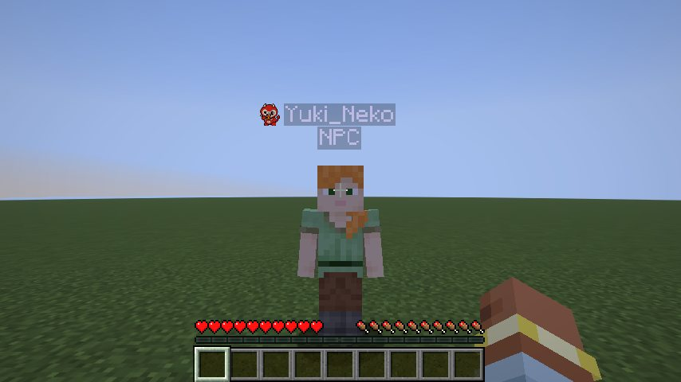
Cuatro temas, tres idiomas
Temas KIRMC, Oscuro y Minecraft, animaciones suaves y sonidos del juego. En español, inglés y japonés, y se actualiza solo.
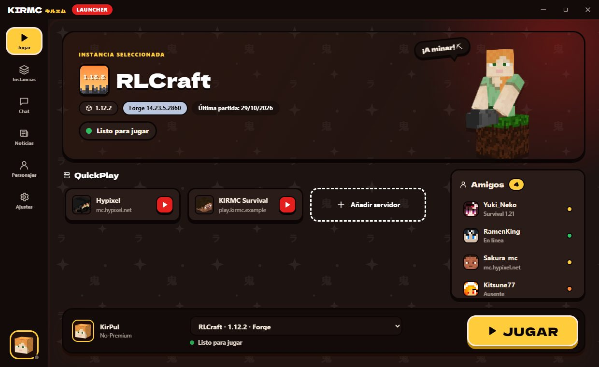
Hecho para verse bien
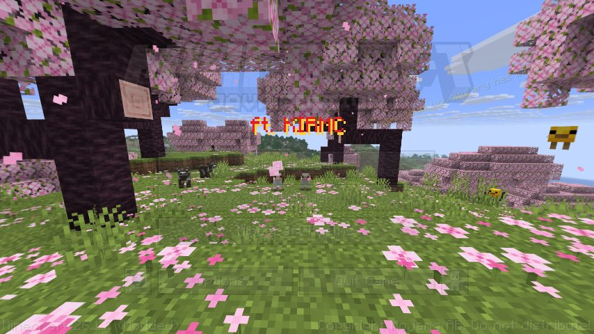
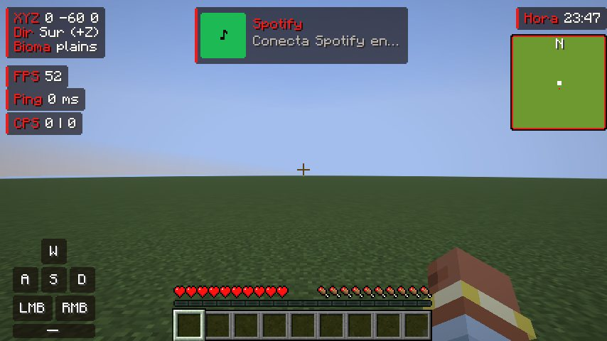
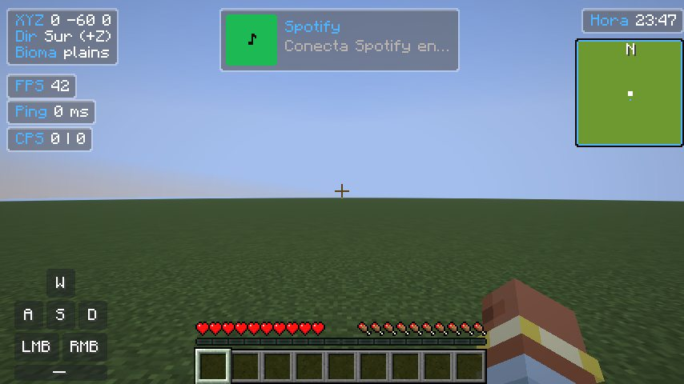
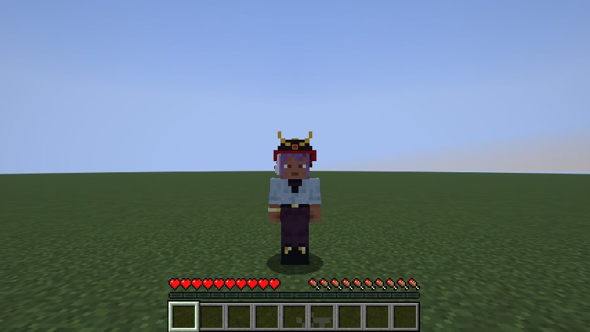
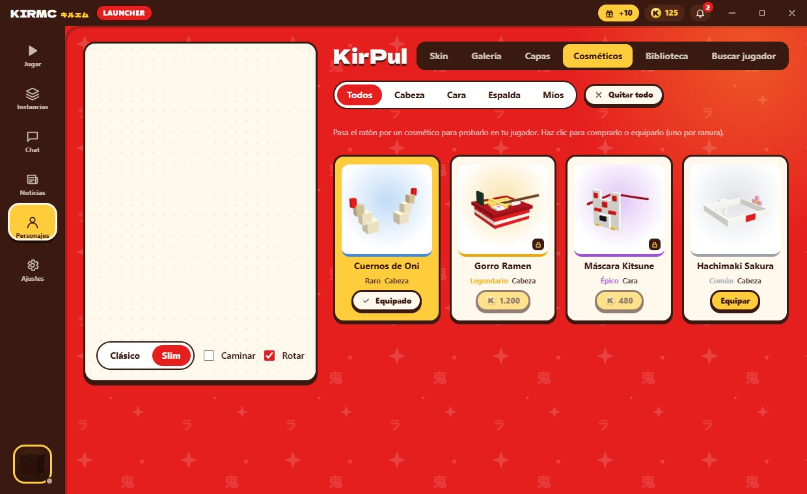
¡Ramen time!
Descarga KIRMC Launcher, crea tu primera instancia y a jugar.
Descargar v1.6.0Preguntas frecuentes
¿Es gratis?
Sí. KIRMC Launcher es gratis. Las K coins se ganan cada día y, si quieres, también se pueden recargar.
Windows dice que el archivo no es común, ¿es seguro?
Es normal en programas nuevos sin firma de Microsoft. Pulsa «Más información» y «Ejecutar de todas formas». El código está en GitHub.
¿Necesito Minecraft original?
Puedes entrar con tu cuenta de Microsoft (premium) o jugar en modo no-premium. Para amigos, chat y K coins necesitas una cuenta KIRMC gratuita.
¿Dónde compro y equipo los cosméticos?
En el launcher: Personajes → Tienda. En esta web puedes verlos y probártelos sobre tu skin.
Soy nuevo, ¿hay algún regalo?
Sí: las cuentas con menos de 30 días pueden canjear el código BIENVENIDO-KIRMC en Ajustes → Código promocional y llevarse la Capa de Bienvenida.